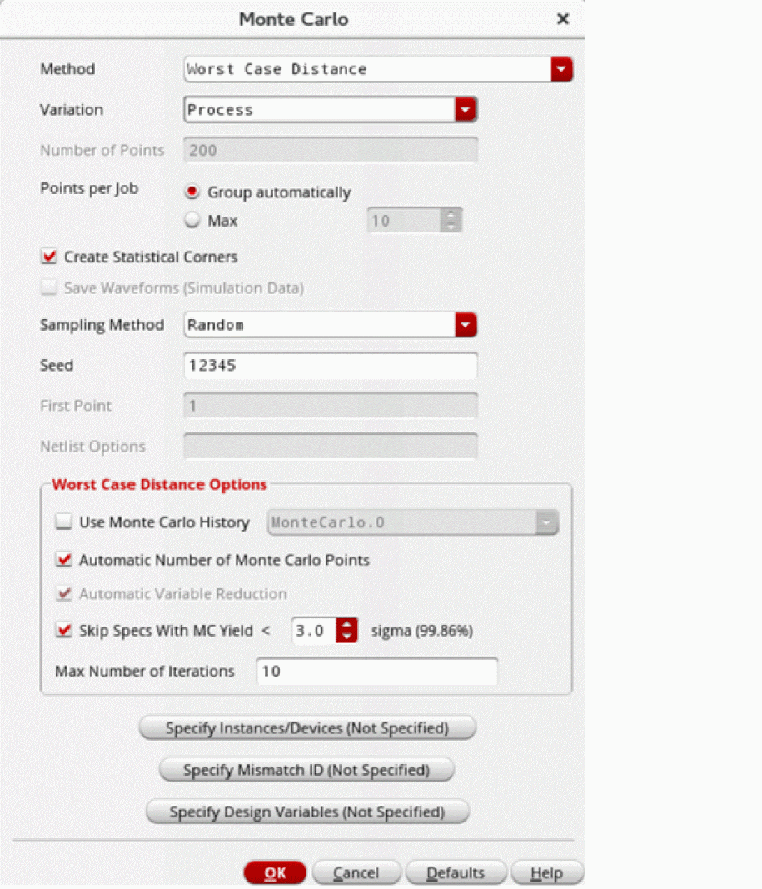

Running the Worst-Case Distance Method
Before you run the Worst-Case Distance (WCD) method, ensure that the following environment variable is set to t:
envSetVal("maestro.monte" "showMethodWorstCaseDistance" 'boolean t)
To run the Worst-Case Distance method:
- Open your design in ADE Assembler or ADE Explorer.
- From the Run Mode drop-down list, select Monte Carlo Sampling.
-
Click the Simulation Options command.
The Monte Carlo form opens.
 - From the Method drop-down list, select Worst Case Distance.
- From the Variation drop-down list, select one of the following options: Mismatch, Process, or All.
-
The Number of Points field is set to
200by default. This field is disabled when the Automatic Number of Monte Carlo Points check box is selected. - Select the Create Statistical Corners check box if you want to create statistical corners. When this option is selected, the task selection in the Guided Mode is changed to Create statistical corners.
- From the Sampling Method drop-down list, select one of the following options: Low-Discrepancy Sequence, Latin Hypercube, or Random.
- In the Worst Case Distance Options section, specify the fields as required.
- Click OK to close the Monte Carlo form.
- Click Run Simulation to run the Monte Carlo simulation.
The Run Log | Log File viewer window appears, displaying information about the progress of the initial Monte Carlo Sampling run, the yield estimate at each iteration, and the summary of the Monte Carlo run.
The log file also displays the sigma of the statistical variable, which helps in understanding the results when you work with different units. The log file also displays the statistical parameter contribution values for the WCD point and device contribution values for the squared WCD values.
Related Topics
The Worst-Case Distance Method
Yield View of the Worst-Case Distance Method
Creating Statistical Corners from the Worst-Case Distance Method
Return to top